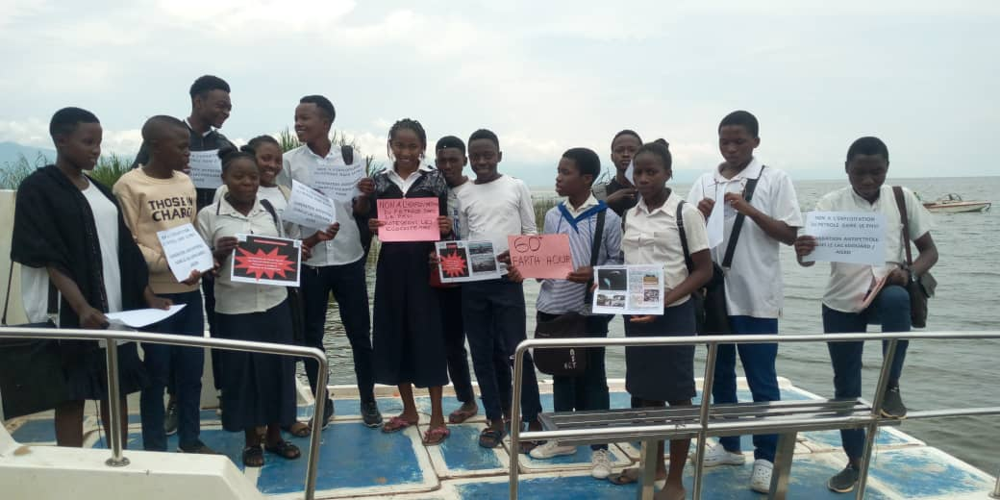

Lâexploitation du pétrole dans le Parc National des Virunga : une bataille gagnée ou une trêve stratégique pour les tenants de lâexploitation du pétrole
I . Le combat de la lutte contre lâexploitation du Pétrole dans le PNVi
En effet, le Parc national des Virunga, www.virunga.cd, ( PNVi)  présente une diversité dâécosystèmes immense, allant des sommets enneigés des Monts Ruwenzori et des volcans actifs du massif des Virunga aux marécages du Lac Edouard, aux forêts afro montagnardes et à la savane. Il abrite une immense biodiversité qui comprend notamment le gorille des montagnes, mais aussi des okapis et des éléphants, sans conteste, le PNVi est un véritable « paradis terrestre » et les historiens lâappelle « huitième merveille du monde »
Malheureusement, malgré les valeurs exceptionnelles du PNVi, dâune part et contrairement  à la loi N°11/009 du 09 Juillet 2011 portant principes fondamentaux relatifs à la protection de lâenvironnement dont lâarticle 33 alinéa deuxième dit que «  est nul tout droit accordé dans les limites des aires [protégées] et zones [interdites],  SOCO, une entreprise pétrolière britannique avait obtenu une licence dâexploitation du pétrole dans ce site du Patrimoine Mondiale et site de Ramsar jusquâau point de terminer avec les activités dâexploration.  .
Heureusement, grâce aux efforts conjugués par les communautés locales, les organisations de la société civile et de la communauté internationale,  SOCO sâest retiré de lâexploitation du pétrole dans le PNVi  le 11 juin 2014. Certains ont qualifié ce retrait comme la victoire, prouvant que  la bataille est gagnée et quâil nây a plus des menaces pétrolières dans le PNVi  et pourtant dâautres pensent  que câest   une trêve stratégique pour les tenants de lâexploitation du pétrole et la menace est devenue  encore plus grande.
Câest ainsi que, dans le cadre de la mise en Åuvre du Nouveau Pacte pour la Nature et les Personnes conduits par la plateforme « African Network of Young Leaders for Peace and Sustainable Development , www.anyl4psd.org» (ANYL4PSD/ND4NP) ,  et dont  AICED, Appui aux Initiatives Communautaire de Conservation de lâEnvironnement et de Développement  durable, https://anyl4psd.org/focal-point-organizations/     et https://www.youtube.com/watch?v=LmoIAcQWkUY  est  non seulement le  point focal de la plateforme ANYL4PSD, mais aussi est  impliqué dans le processus dâimplémentation de ce nouveau pacte pour la Nature en République Démocratique du Congo , sâest penchée à cette question afin dâévaluer les menaces ou non de lâexploitation du pétrole dans   PNVi pour que ce dernier garde toujours sont statut de site du Patrimoine de lâUNESCO.
II. Les avancées   et les faiblesses  dans la guerre contre lâexploitation pétrolière dans le PNVi
 2.1 Les avancés
 La compagnie pétrolière britannique SOCO International  a annoncé ce 11 juin 2014 quâelle mettait un terme à toutes ses activités dans le Parc national des Virunga. Elle sâest aussi engagée à rester loin de tous les autres sites inscrits au Patrimoine mondial de lâUNESCO.
La compagnie rejoint SHELL, TOTAL et le Conseil international des mines et métaux (ICMM) qui se sont engagés à ne pas entreprendre de prospections pétrolières ou ouvrir des exploitations minières dans des sites du patrimoine
2.2 Les faiblesses
Le Comité du patrimoine mondial avait déclaré ceci : « Nous espérons que le gouvernement de la RDC donnera suite à cet engagement de la SOCO et annulera tous les permis dâexploration accordés à lâintérieur du Parc national des Virunga. » Malheureusement jusquâà présent aucun contrat pétrolier nâa jamais été annulé par une ordonnance présidentielle.
III. La victoire contre lâexploitation pétrolière dans le PNVi : une trêve stratégique pour le tenant de lâexploitation du pétrole ;
Après les retraits de SOCO dans le PNVi, les partisantes de lâexploitation pétrolière ont profité de cette trêve  afin de bien sâarmer même sur le plan juridique.
3.1 Un soubassement juridique  de lâexploitation pétrolière dans les aires protégées
La Loi n° 15/012 du 1ier août 2015 portant régime général des hydrocarbures  donne la possibilité dâexploitation pétrolière dans les aires protégées, car à son article 155
il est dit ce qui suit  « Lâexercice des activités d’hydrocarbures en amont est interdit dans les aires protégées et les zones interdites.
Pour cause d’utilité publique, un décret délibéré en Conseil des Ministres peut, après audit environnemental, enquête publique et avis de l’établissement public chargé de l’évaluation et de l’approbation de l’étude d’impact environnemental ainsi que du suivi de sa mise en Åuvre, autoriser tes activités d’exploration dans les aires protégées et zones interdites.
En cas de découverte d’hydrocarbures, il pourra être procédé à l’exploitation, après déclassement de tout ou partie des aires protégées et zones interdites
Ce déclassement aux fins d’activités d’hydrocarbures se fait conformément à la loi. »
Sans conteste, cet article 155, donne un soubassement juridique de lâexploitation pétrolière dans les aires protégées. Il est à noter que SOCO avait terminé avec lâexploration pétrolière dans le Lac Edouard, il a déjà des données sur la quantité des pétroles dans ce lac et nous craignons que cela soit capitalisé par le gouvernement ou dâautres entreprises pétrolières.
Dans la même veine, cet article 155 susmentionné  met en cause même le statut du PNVi comme site du Patrimoine Mondiale. Cela  semble concrétiser les intentions des politiques congolais visant à  mettre en cause le statut légal du PNVi comme site du Patrimoine Mondiale.  En titre illustratif, nous citerons le propos dâun ancien ministre des hydrocarbures, Monsieur Crispin Atama Tabe qui avait déclaré  « Lâadhésion de la RDC à lâUNESCO ou le fait de confier la gestion du parc des Virunga comme patrimoine mondial nâenlève en rien la souveraineté de la RDC sur cette portion de terre »,[1]
Cette crainte est aussi partagée par lâUNESCO et lâUICN dans le rapport  où il est dit que : « malgré la nouvelle loi sur la conservation de la nature de 2014, il semble que certains choix liés à la lâexploitation des ressources naturelles dans les aires protégées par certains secteurs gouvernementaux (ex : exploitation pétrolière) risque de dâentrainer la remise en cause du statut légal du de protection de bien » ( recommandation des missions de lâ UNESCO/UICN au PNVi  du 23 au 28 avril 2018 page 11)
3.2  La position du gouvernement nâa pas changé face à lâexploitation du pétrole
Refus dâannuler les permis dâexploration accordés à lâintérieur du Parc national des Virunga
Le fait que le Gouvernement de RDCongo nâa pas appliqué  la recommandation de lâUNESCO, consistant à  annuler tous les permis dâexploration accordés à lâintérieur du Parc national des Virunga,  nous pousse à confirmer que la position du gouvernement nâa pas changé face à lâexploitation du pétrole dans le PNVi.
lâappel dâoffre publié visant lâattribution de 19 blocs pétroliers
Le jeudi 28 janvier dernier, Monsieur Rubens Muhima, le ministre de lâEnergie et des Hydrocarbures de la République démocratique du Congo (RDC), avait  annoncé que le pays comptait proposer 19 blocs dâexploration de pétrole et de gaz au marché, au cours du dernier trimestre de cette année. Neuf de ces blocs sont situés dans le bassin central du pays, trois dans le bassin côtier terrestre, quatre dans le bassin du lac Tanganyika et trois dans le lac Kivu.  Il sâagira, selon le Ministre,  du premier appel dâoffre international pour des blocs dâexploration pétrolière dans le pays et que la mise en place de ce  programme est régie par le nouveau code pétrolier adopté en 2015.
Selon le journal agence ecofin [2] , « la dernière proposition de périmètres à explorer, a couvert des zones situées dans des espaces protégés comme le parc des Virunga. »
Cette annonce et le fait que la dernière proposition de périmètres à explorer couvrent  des zones situées dans  le PNVi,  ne montrent-il pas   le gouvernement de la RDCongo  nâa pas renoncé à ses projets dâexploitation pétrolière dans les aires protégées ?
Exploitation du pétrole en Ouganda un précédent pour les politiques de la RDCongo
parmi les arguments que les politiques de la RD Congo avancent pour justifier lâexploitation du pétrole dans le lac Edouard qui fait partie du PNVi est le  fait  lâOuganda  qui partage les eaux du Lac Edouard et Albert a déjà commencé lâexploitation pétrolière dans le lac Albert même si cela  est impacterait négativement sur plusieurs parcs nationaux et notamment celui de Murchisson Falls, le plus grand par de lâOuganda.
En outre, l’Ouganda, la Tanzanie et les compagnies pétrolières françaises Totale et chinoise CNOOC ont signé ce mois dâavril 2021 plusieurs accords, qui ouvrent la voie à la construction de l’oléoduc qui transportera le brut ougandais vers un port tanzanien et cela malgré lâopposition des des acteurs de la protection de lâenvironnement. Avec ses 1 443 km de long, ce sera le plus long oléoduc de pétrole brut chauffé au monde. Il acheminera lâor noir extrait du lac Albert en Ouganda au port tanzanien de Tanga avant son exportation, notamment vers des sites du groupe Total ou vers la Chine. La construction de ce pipeline sera assurée par le géant français des hydrocarbures et le groupe chinois CNOOC. Coût estimé de lâopération : 3,5 milliards de dollars. Un investissement qui se justifie par lâimportance des réserves repérées en 2006. Au total, 6,5 milliards de barils de brut reposent sous les eaux du lac Albert, dont environ 21% sont récupérables dans l’état actuel des découvertes. Ce qui équivaut pour lâOuganda à une exploitation de 25 à 30 ans, avec un pic de production de 230 000 barils par jour. [3]
 Le président tanzanien John Magufuli avait parlé dâun d’un accord qui va « non seulement créer des emplois, mais aussi promouvoir la coopération régionale et le développement économique des zones traversées par lâoléoduc. »  Plus précisément, les autorités tanzaniennes estiment que 10 000 emplois seront créés grâce à la construction de l’oléoduc.[4]
Lâexploitation du pétrole en Uganda dans les eaux quâil partage avec la RDCongo et avec la construction de cet oléoduc peut être un précédent que peut capitaliser le gouvernement congolais afin dâautoriser lâexploitation du pétrole et surtout que cette  exploitation  en Ouganda se passe à coté des aires protégés pour justifier que lâexploitation du pétrole  est compatible avec la protection des écosystèmes sensibles comme le PNVi et surtout que rappelons-le, lâentreprise pétrolière SOCO avait terminé avec lâexploration pétrolière  dans les eaux du lac  Edouard la partie congolaise et détient  les données sur de la quantité des pétroles  dans ce lac et quâil nâa jamais publié.
3.4 Les actions de la Plateforme ANYL4PSD pour lutter contre lâexploitation du Pétrole dans le PNViÂ
Les plaidoyers
Ayant compris que le menace dâexploitation du pétrole sur PNVi est devenu encore plus grande quâavant dâune part et comme en RDCongo, il ya dâautres blocs contenant des réserves du pétrole en dehors des aires protégées, la plateforme ANY4PSD de la RDCongo a mené des actions des plaidoyers demandant lâannulation de contrats dâexploitations pétrolières déjà livrés, la cessation des autres contrats dâexploitations  ultérieure tout en attirant lâattention des autorités sur la controverse de lâarticle 155 de la Loi n° 15/012 du 1ier août 2015 portant régime général des hydrocarbures notamment le plaidoyer suivant  :
« La Loi n° 15/012 du 1ier août 2015 portant régime général des hydrocarbures  donne la possibilité dâexploitation pétrolière dans le lac Edouard qui fait partie dâune aire protégée : une incompatibilité avec votre vision sur la protection de la biodiversité et avec les autres dispositions de la République, et demande de votre implication personnelle pour annuler le permis dâexploitation dans ce lac »  dans la lettre N°03/ANYL4PSD/RDC/10/2020  du 28/10/2020 que nous avions adressé à  Son Excellence Monsieur le Président de la République.
 « Lâexploitation du Pétrole dans le Lac Edouard est une menace pour les zones humides dont dépend   la survie des communautés riveraines, une violation de la constitution et de la convention de RAMSAR : demande de lâannulation des permis dâexploitation pétrolière dans le PNVi » dans la lettre N°01/ANYL4PSD/RDC/02/2020 du 02/02/2021 que nous avions adressé à Son Excellence Monsieur le Président de la République.
[1] https://www.radiookapi.net/environnement/2013/09/11/exploration-du-petrole-dans-les-aires-protegees-la-rdc-repond-global-witness
[2] https://www.agenceecofin.com/exploration/1702-85302-fin-2021-la-rdc-va-pour-la-premiere-fois-lancer-un-appel-d-offres-pour-des-blocs-petroliers
[3] https://www.rfi.fr/fr/afrique/20210412-la-construction-du-pipeline-g%C3%A9ant-entre-la-tanzanie-et-l-ouganda-sur-la-bonne-voie
[4]Â https://www.afriquemedia.tv/afrique/accord-pour-la-construction-d-un-oleoduc-entre-la-tanzanie-et-l-ouganda
Ce plaidoyer  sur les zones humides  était passé à la radio Okapi avec le Journaliste Marc Marofimbo , radio de lâONU en RDCongo

ANYL4PSD : Journaliste Marc Morofimbo de la Radio Okapi , radio de lâONU en RDCongo
Ce même plaidoyer  sur les zones humides était relayé par la radio communautaire riverain du PNVi appelé radio communautaire la vérité

Monsieur Dunia membre de la plateforme ANYL4PSD dans le studio de la Radio communautaire la vérité
« Insécurité persistante dans le PNVi : demande de lâévaluation de lâapplication  du  décret portant création dâun corps chargés de la sécurisation des parcs nationaux et réserves naturelles apparentés  afin de protéger les écosystèmes de PNVi ,  les personnels de lâICCN, les communautés riveraines et pour promouvoir le tourisme, pilier du développement durable » dans la lettre N°02/ANYL4PSD/RDC/03/2021 du 01/03/2021 que nous avions adressé à Son Excellence Monsieur le Premier Ministre.
Ce plaidoyer sur lâinsécurité grandissante dans le PNVi était publié dans le site de la radio Okapi, radio de lâONU en RDCongo https://www.radiookapi.net/2021/03/04/actualite/societe/insecurite-persistante-dans-le-parc-des-virunga-un-collectif-des-ong
Dans la poursuite de ce même plaidoyer ci-haut, nous avions contacté monsieur Kisuki Mathe Benoit qui est le commandant adjoint en charge de lâAdministration Finance et Logistique du corps chargés de la sécurisation des parcs nationaux et réserves naturelles apparentés (CorPPN)   .  Le commandant nous a montré les avancés du CorPPN  et les défis auxquels fait face CorPPN et de quelle façon nous, société civile pouvons contribuer à lâapplication du CorPPN
Approche « jeunesse anti pétrole » dans le lac Edouard
AICED  a pensé  quâil faut préparer la jeunesse dans les écoles du milieu riverain du Lac Edouard   sur les conséquences néfastes écocides et irréversibles de lâexploitation du pétrole dans le Lac Edouard ». En outre, la mission du 11-21 août 2007 de lâUNESCO/UICN au PNVi avait proposé que « ce sont les populations locales qui pourront par la suite influencer les autorités politiques et administratives pour quâelles appuient les initiatives en faveur de la conservation » et pourtant la jeunesse constitue une force non négligeable pour influencer les autorités politiques en matière de lutte contre lâexploitation du pétrole dans le PNVi , dâoù notre approche « jeunesse antipétrole » autours des Virunga. Une fois cette jeuneuse  formée, elle pourra transmettre ces valeurs à dâautres et ainsi on aura une « génération antipétrole »  dans le Virunga. AICED forme ces jeunes dans la production des plaidoyers contre lâexploitation du pétrole dans le Lac Edouard qui fait partie du PNVI

Le club de la Jeunesse « antipétrole » dans le Lac Edouard
4. CONCLUSION
Sans conteste, la lutte contre lâexploitation du pétrole dans le PNVi a connu un grand succès avec le retrait de SOCO. Néanmoins,   cette victoire contre lâexploitation pétrolière dans le PNVi a était    est une trêve stratégique pour le tenant de lâexploitation du pétrole.  Les gouvernements en a profité pour légiférer des soubassements juridique afin non seulement dâexploiter les pétroles dans les aires protégées mais aussi de mettre même en cause le statut légal du PNVi comme site du Patrimoine Mondiale, câest qui est encore plus grave.
5. RECOMMANDATIONS ET PERSPECTIVES DâAVENIR
Comme ce sont les aires protégées  notamment le Parc National de la Salongo et le PNVi qui sont respectivement dans le bloc IV et V du rift albertin,  qui sont menacées par  lâexploitation du pétrole, la plateforme ANYL4PSD de la RDCongo va étendre ces actions de plaidoyers aux autres aires protégées y compris les tourbières. Et cela en demandant :
- Au du gouvernement lâannulation de tous les permis dâexploration pétrolières accordés à lâintérieur  dans les aires protégées et les tourbières au niveau National ;Â
- demander au gouvernement de ne pas octroyer dâautres concessions dâexploitation pétrolière dans les aires protégées ;
- faire de plaidoyer contre les éventuelles modifications des limites des aires protégées  conformément à lâarticle 155 susmentionné afin de faciliter une activité dâexploitation pétrolière.  Â
Nyebone Faustin
Directeur Exécutif National AICED, Point Focal  ANYL4PSD/ND4NP en RDCongo